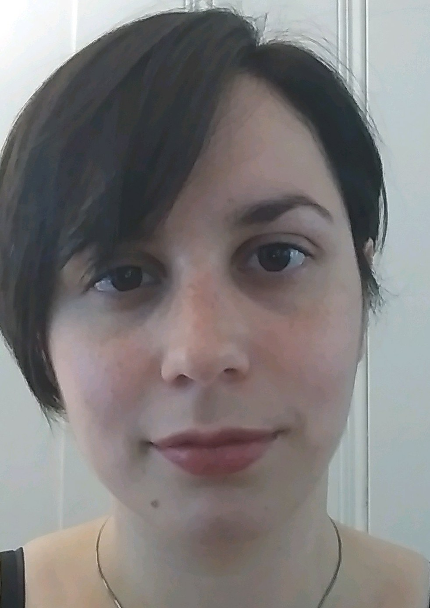

About Me

My name is Elana and I am an artist who knows coding! Currently I am a Full Stack Developer who likes to get her hands dirty. Since I am an artist I love front end work. I am currently working on a few full stack projects for a few different clients.
You can check out my site and see most of what I have been up to. Take a look at a few of my projects! I am really proud of all of my endevors.
Connect with Me